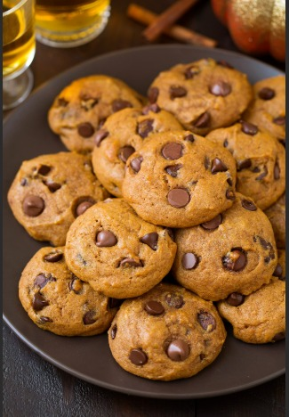

YUMMY BISCUITS
Biscuits are made from the basic recipe of plain cakes, rich cakes and ginger bread mixtures.
RECIPE INFORMATION
Prep time: 15 minutes
Cook time: 12 minutes
Servings 24 Biscuits
Difficulty : Beginner
INGREDIENTS
Flour 250g
Sugar 100g
Margarine 100g
Flavour type desire
INSTRUCTIONS (procedure)
Rub the fat and flour together
Stir in the Sugar
Add sufficient cold water to form a stick dough
Roll out thickly and prick with a fork
cut rounds with a biscuits cutler or wineglass and place them on a well greased baking tray
Bake in a moderately hot oven for 15mins until they are very pale fawn in colour
ADDITIONAL INFORMATION